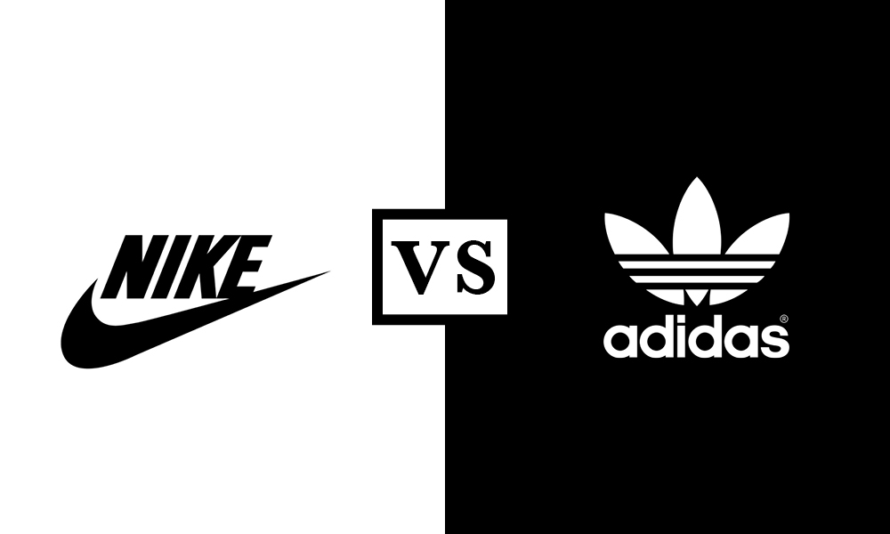

This project leverages Python to analyze A/B testing data from marketing campaigns, evaluating the effectiveness of different strategies in driving user engagement and conversions.
Through statistical analysis and data visualization, actionable insights are provided to optimize marketing performance and guide future decision-making.


Developed data-driven insights by building an ETL pipeline with SQL and visualizing results in Power BI. Managed data operations in Azure Data Studio and applied Random Forest in Python for customer churn prediction.
This Predictive analysis aims to provide a comprehensive assessment of stroke, utilizing a health dataset containing various demographic and health information. The analysis seeks to understand the relationships between patients' likelihood of having a stroke and other features, identify factors influencing stroke risk

Conducted a comprehensive product analysis of Nike vs. Adidas using the provided dataset to uncover key differences in pricing strategies, discounts, and product listings. By diving into metrics like selling price, listing price, and discount trends, I identified actionable insights to understand competitive positioning, pricing dynamics, and opportunities for market differentiation, offering valuable recommendations to optimize product performance and maximize revenue potential.

Conducted a comprehensive analysis of London’s bike-sharing system using Python for data integration and Tableau for visualizing insights. Uncovered usage patterns, weather impact, and location dynamics, leading to actionable recommendations for optimizing resource allocation, expanding docking stations, and enhancing operational efficiency while promoting sustainable urban mobility.

Executed SQL-based analysis on Netflix’s dataset to identify trends in content distribution, audience preferences, and regional patterns, providing actionable insights for content strategy optimisation./p>
=“I brewed up a fully-loaded Costa Coffee sales dashboard by transforming messy data into interactive pivot-table bliss. Now, we can geek out over sales metrics, segment consumers, and compare product performance across countries—all in one slick view. It’s like a caffeine jolt for our strategy, served with a side of data-driven insight.”.